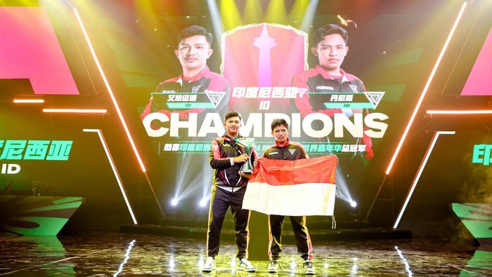

GALERY BERITA




Halo, saya Michael Yusuf Lubis. Saya adalah seorang mahasiswa smester 4, Yang Berusia 20 tahun, Saya bertempat tinggal di Binjai, sumatra utara. Saya anak terakhir dari 5 bersaudara antara 3 laki-laki dan 2 perempuan, saya suka dengan perograming dan menurut saya perograming itu rumit dan saya sangat tertantang untuk mempelajarinya.
Komisi Pemilihan Umum (KPU) menetapkan pasangan calon nomor urut 2 Prabowo Subianto-Gibran Rakabuming Raka sebagai pemenang dalam Pilpres 2024. Prabowo-Gibran memperoleh 96.214.691 suara sah. Perolehan suara pasangan ini setara dengan 58,6 persen dari total suara nasional 164.227.475. "Jumlah suara sah pasangan calon presiden dan calon presiden Prabowo Subianto dan Gibran Rakabuming Raka sebanyak 96.214.691," kata Ketua KPU RI Hasyim Asy'ari di Kantor KPU RI, Jakarta, Rabu (20/3).
Digelar di Shanghai University of Finance and Economics Stadium, Shanghai, China, Minggu malam (17/3), tim Indonesia yang diwakili oleh Ahmad Nurhakim (ID.GarudaFM) dan Dennis Al Farizi Wahdiat Putra (ID.hazard) atau yang lebih dikenal sebagai Kumaaa berhasil mengungguli tim tuan rumah CN VGD. "Terima kasih kami ucapkan kepada orang tua dan keluarga yang selalu mendukung dalam kondisi apa pun, baik menang maupun kalah, komunitas FC Mobile Community Indonesia, followers dan subscribers kanal YouTube GarudaFM, serta teman-teman yang telah mempercayakan kami sebagai perwakilan dari Indonesia dan senantiasa mendukung kami dengan komentar positif," ujar Ahmad Nurhakim alias GarudaFM dalam keterangan pers.
fitur Retweet seakan-akan hilang dari Twitter. Ya, karena ketika saya menekan tombol Retweet, tampilan malah beralih ke mode Retweet with Comments. Apakah ini sebuah error? Ternyata tidak. Akun Twitter Support dan Twitter Indonesia membagikan cuitan bahwa fitur ini dibuat untuk memastikan pengguna memahami konteks dan konten dari sebuah cuitan, sebelum dibagikan dengan fitur Retweet. Twitter Support sebelumnya juga menjelaskan bahwa fitur ini hanya akan bersifat sementara. Fitur ini dibuat untuk pendekatan Twitter dalam membatasi penyebaran informasi yang menyesatkan, selama #Election2020 alias pemilihan umum di Amerika Serikat.
Jika melihat tren kopi beberapa tahun belakangan, kopi susu yang dipadukan dengan gula aren menjadi salah satu rasa kopi yang disukai banyak orang. Kemudian tren kopi berkembang karena popularitas drama Korea yang kerap memperlihatkan aktor dan aktrisnya membeli kopi Americano di beberapa adegan. Hal itu juga membuat kopi Americano menjadi cukup populer belakangan. Namun di tahun 2022, seperti apa tren rasa kopi yang tengah diminati? "Tapi kalau melihat favoritnya tren minum kopi ini masih yang berbasis susu," ungkap dia kepada Kompas.com, di Jakarta, baru-baru ini. Beberapa rasa kopi berbasis susu yang dimaksud sebetulnya masih sama seperti tren minum kopi beberapa tahun ke belakang, yaitu cappuccino dan latte.
Pemrograman adalah keahlian yang luar biasa penting dalam era digital ini. Dari inovasi teknologi hingga transformasi industri, pemrograman memainkan peran kunci dalam membentuk dunia modern yang terus berkembang. Selain manfaat praktisnya, pemrograman juga memungkinkan kreativitas, inovasi, dan kemajuan di berbagai bidang. Bagi siapa pun yang tertarik untuk memahami dan menguasai teknologi, mempelajari pemrograman adalah langkah yang tepat. Dengan sumber daya belajar yang semakin mudah diakses, siapa pun dapat mengembangkan keterampilan pemrograman yang berharga dan memberdayakan diri untuk menghadapi masa depan yang penuh dengan teknologi.
Roket H3 yang dirancang Aerospace Exploration Agency (JAXA) bersama mitra komersialnya, Mitsubishi Heavy Industries kembali mengalami kegagalan untuk mencapai orbit Bumi. Kegagalan ini mengingatkan kita pada upaya penerbangan pertama di mana kendaraan itu tetap berada di tempatnya. Meski begitu upaya kedua ini lebih berhasil daripada yang pertama, karena roket mampu lepas landas. Tetapi Pusat Antariksa Tanegashima memutuskan bahwa roket tersebut "tidak memiliki kemungkinan untuk mencapai misi" dan mereka mengeluarkan "perintah penghancuran". Masalah tampaknya muncul antara akhir tahap pertama dan pemisahan roket serta pengapian tahap kedua roket. Menurut data kecepatan yang diberikan selama acara livestream JAXA, kecepatan roket mulai menurun setelah melepaskan mesin tahap pertamanya. Seandainya mesin tahap kedua bekerja seperti yang diharapkan, roket seharusnya terus berakselerasi.